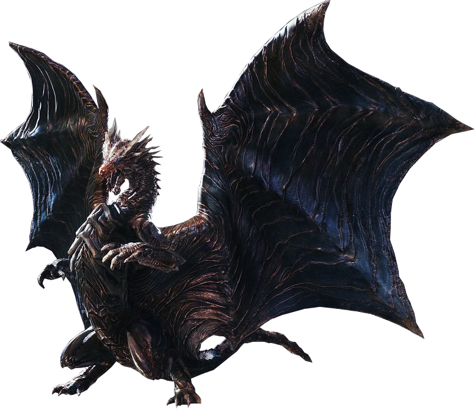
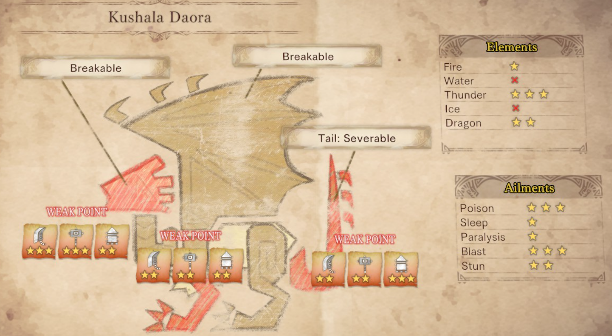

So, this fight… it kind of sucks. Kushala Daora defends itself with a volley of wind-based attacks. More annoying, however, is the barrier of air that surrounds its body during much of the fight, making it difficult for players to land hits. Predictably, Kushala Daora also spends an obnoxious amount of time in flight, even if it is simply hovering just above the ground. Players that favor certain weapons with shorter reach, such as the hammer or the sword and shield, may find themselves having a particularly rough time with this monster. Kushala Daora’s fight in Monster Hunter: World is known among the fanbase for being tedious, frustrating, and long‑winded.

Tips
- Focus your attacks on Kushala Daora’s head. Enough blows to the head will eventually stun it, allowing you to do decent damage without being hindered by the wind barrier or Kushala staying out of range. Stunning Kushala is helpful even if you’re using a ranged weapon, as it will become a stationary target.
- Kushala Daora’s attacks are fairly telegraphed—moreso than those of some other monsters. You will usually have ample time to react, so be sure to take it slow and pay attention. Dedicating a run to simply observing Kushala’s moveset and attack patterns may be wise.
- If you are using ranged weapons, most of the time you will only be able to deal decent damage to Kushala Daora if you aim for its tail or its head.
- You can use a Flash Pod to drop Kushala Daora out of the air and incapacitate it for 7 seconds. For a fight like this, Flash Pods are absolutely invaluable. Make sure Kushala is close to and facing the Flash Pod when it goes off. Depending on the difficulty, Flash Pods will lose effectiveness when used multiple times in a hunt, so it is not feasible to rely on them completely.
Bodily Attributes, Immunities, and Weaknesses

( X = immune | ☆ = weak | ☆☆ = very weak | ☆☆☆ = extremely weak )
Drop Charts
( Not included: Plunderblade and Investigation rewards )
| Carves and Hunt Rewards | Rewards for Part Breaks | |
|---|---|---|
| High Rank |
Daora Tail | Tail 70% Daora Horn+ | Body 8% Daora Dragon Scale+ | Body 32% Daora Carapace | Body 24%, Tail 27% Daora Gem | Body 2%, Tail 3% Daora Claw+ | Body 19% Astral Melding Ticket | Body 15% |
Astral Melding Ticket | Wings 70% Daora Claw+ | Wings 30% Daora Horn+ | Head 66% Daora Dragon Scale + | Head 32% Daora Gem | Head 2% |
| Master Rank |
Daora Lash | Tail 30% Daora Hardhorn | Body 8% Daora Shard | Body 30% Daora Cortex | Body 22%, Tail 27% Large Elder Dragon Gem | Body 2%, Tail 3% Daora Hardclaw | Body 18% Daora Fellwing | Body 15% |
Daora Fellwing | Wing 70% Daora Hardclaw | Wing 30% Daora Hardhorn | Head 66% Daora Shard | Head 32% Large Elder Dragon Gem | Head 2% |
| Quest Clear Rewards | Shiny Drops | |
|---|---|---|
| High Rank |
Elder Dragon Bone | 8% Daora Carapace | 27% Daora Dragon Scale+ | 22% Daora Claw+ | 18% Daora Webbing | 13% Elder Dragon Blood | 12% |
Daora Dragon Scale+ | 50% Daora Carapace | 28% Dragon Treasure | 22% |
| Master Rank |
Elder Dragon Bone | 8% Large Elder Dragon Bone | 8% Daora Carapace | 27% Daora Dragon Scale+ | 22% Daora Claw+ | 18% Daora Webbing | 13% Elder Dragon Blood | 12% |
Daora Dragon Scale+ | 50% Daora Carapace | 28% Dragon Treasure | 22% |